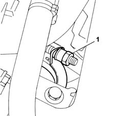
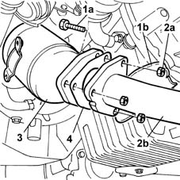

1080B40 catalytic pre-converter - r r
- Path
- Procedures > 10 ENGINE UNIT > 1080 EXHAUST EMISSION CONTROL SYSTEM > 1080B exhaust emission control system > 1080B40 catalytic pre-converter - r r
- Kind
- repair procedure (removal / refitting; the operation number is the code)
- Applies to
- engines: 1.9 JTD 8V; all production periods
- Interactive page
- https://sloeber94.github.io/elrnDB-fMltpl/en/#/2891428
Applies to: engines: 1.9 JTD 8V; all production periods; only with equipment: Euro 3
 Removing
Removing
 Refitting
RefittingPlace the car on the ramp.
Disconnect the battery negative terminal.
 | Name | Connector |
|---|---|---|
- | Battery |
1072C44 exhaust manifold heat shield on bulkhead - r+r
1. Undo the nut fixing the coupling band to the turbocharger.

Applies to: engines: 1.9 JTD 8V; all production periods
Raise the lift.
1. Undo the bolts (1a) fixing the preconverter to the reinforcement bracket (1b).
2. Undo the fixing nuts (2a) on the exhaust pipe (2b).
3. Remove the catalytic preconverter from the engine compartment.
4. Keep the exhaust pipe gasket.

Applies to: engines: 1.9 JTD 8V; all production periods
Refitting
RemovingPosition the catalytic preconverter complete with gasket, then move the front section of the exhaust pipe closer and tighten the fixing nuts to torque.
 | Fastening | Component | Ø | Value (daNm) |
|---|---|---|---|---|
- | Nut | CATALYTIC PRE-CONVERTER | M8 | (Catalytic converter exhaust pipe) 2.5 |
Tighten the bolts fixing the catalytic preconverter to the reinforcement bracket to torque.
| Fastening | Component | Ø | Value (daNm) |
|---|---|---|---|---|
- | Bolt | CATALYTIC PRE-CONVERTER | M8 | (Reinforcement bracket) 2.5 |
Lower the lift and tighten the nut on the band securing the converter to the turbocharger to torque.
| Fastening | Component | Ø | Value (daNm) |
|---|---|---|---|---|
- | Nut | CATALYTIC PRE-CONVERTER | M10 x 1.5 | (Turbocharger) 2.5 |
1072C44 exhaust manifold heat shield on bulkhead - r+r
Connect the battery negative terminal.
| Name | Connector |
|---|---|---|
- | Battery |
Remove the car from the ramps.